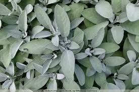
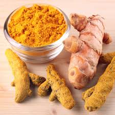

Sage
Background. Sage has a long history of use as a spice and for health purposes. It was used as a traditional herbal remedy in ancient Greece and Rome, as well as in Native American and Chinese medicine. Today, sage is promoted for sore mouth or throat, memory loss, diabetes, high cholesterol levels, and other conditions. Sage has several types of acidic compounds that also act as antioxidants. Chlorogenic acid, caffeic acid, rosmarinic acid, ellagic acid, and rutin have all been linked to benefits such as lower cancer risk, memory improvement, and improved brain function. Several types of research conclude that people taking sage regularly, have improved memory, reasoning, problem-solving, and other cognitive abilities. Hence, it can be considered as a brain booster and is extremely beneficial in treating psychotic conditions and ailments like Alzheimer's disease.
Cinnamon
Cinnamon is a popular culinary spice with antioxidant and inflammatory compounds that may benefit health in several ways. When taken as a supplement, cinnamon may help decrease blood pressure and blood fat levels and help promote healthy blood sugar regulation. Cinnamon tea may also fight off infections and reduce PMS and menstrual cramps. Researchers analyzed 40 studies investigating how cinnamon affects cognitive function. They found that consuming cinnamon may improve learning and memory. Drink it before meals to potentially help control appetite and aid digestion. Add a sprinkle of Cinnamon to your morning coffee or tea. This not only enhances the flavor but may also contribute to weight management by stabilizing blood sugar levels. Include half a teaspoon of ground Cinnamon in your smoothies.
Rosemary

Rosemary has been used in folk medicine to alleviate several diseases including headache, dysmenorrhea, stomachache, epilepsy, rheumatic pain, spasms, nervous agitation, improvement of memory, hysteria, depression, as well as physical and mental fatigue. Rosemary has significant antimicrobial, anti-inflammatory, anti-oxidant, anti-apoptotic, anti-tumorigenic, antinociceptive, and neuroprotective properties. Furthermore, it shows important clinical effects on mood, learning, memory, pain, anxiety, and sleep.
Rosemary is a large, shrubby herb that is normally grown outdoors, but potted plants can be grown indoors if you give them some special tending and attention. Rosemary thrives on lots of light and a precise watering cadence that ensures its loamy soil stays well-hydrated without getting waterlogged.
Turmeric
Both animal and human studies have found that curcumin (turmeric is a plant and it's the roots of the plant that are used to make the spice that is used in cooking and herbal drinks. Curcumin is the naturally occurring compound within the plant's roots that give it it's bright yellow colour and is known as a carotenoid compound. It is also a very strong antioxidant.) may increase brain levels of BDNF. By doing this, it may be effective in delaying or even reversing many brain diseases and age-related decreases in brain function. It may also help improve memory and attention, which seems logical given its effects on BDNF levels. It contains an active compound, curcumin, that has antioxidant and anti-inflammatory properties. Research has found that curcumin has the potential to improve a number of health conditions — including depression. This includes mild depression and even major depressive disorder (MDD). Today, turmeric is promoted as a dietary supplement for a variety of conditions, including arthritis, digestive disorders, respiratory infections, allergies, liver disease, and many others.
With the unpredictable nature of UK weather, we recommend growing turmeric root indoors as it will not survive if temperatures drop below 10°C. If you're planting them inside, then they won't need any light until you start seeing some sprouts, so don't worry about natural light for the first few months.